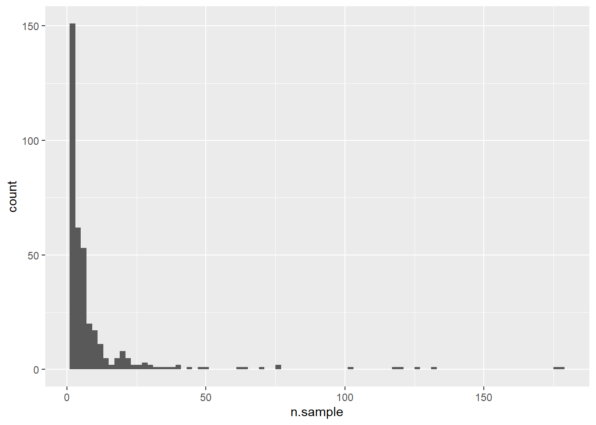

explore saxony anhalt pesticide data
How many samples?
[1] 3767How many sites?
[1] 369How many samples per site?

When does sampling occur?
`stat_bin()` using `bins = 30`. Pick better value with `binwidth`.How many compounds per sample?
How many different compounds?
[1] 67How often does each compound occur?
compound n.occur
1: BENTAZON 2163
2: IMIDACLPR 1039
3: ISOPROTUR 422
4: TERBUAZIN 399
5: MECOPROP 399
6: PROMETRYN 388
7: AMETRYN 354
8: MCPA 352
9: NICSULRON 329
10: METOLACL 314
11: CLTOLURON 266
12: TBCONAZOL 232
13: SIMAZIN 221
14: QUINMERAC 179
15: THIACLPRI 161
16: ATRAZIN 155
17: PROPAZIN 146
18: BOSCALID 141
19: PRSULCARB 133
20: METAZACL 128
21: DFLFNICAN 124
22: DIMETAMID 98
23: FLUFEACET 89
24: CARBENAZI 84
25: PARATI-ME 81
26: DIURON 79
27: FNPRMORPH 66
28: IRGAROLM1 64
29: CLTHIADIN 60
30: LENACIL 36
31: TERBUTRYN 33
32: EPXCONAZO 33
33: TRICLOSAN 31
34: PETOXAMID 30
35: TIAMEOXAM 28
36: DETBUAZIN 23
37: DOXSTRBIN 22
38: SPIROXAMI 19
39: METAMITRO 19
40: DICOFOL 18
41: CLRIDAZON 17
42: FLUTAMON 15
43: PRPCNAZOL 14
44: AZOXYSTR 12
45: FIPRONIL 11
46: ACEMIPRI 11
47: FLUROXPYR 9
48: ACLONIFEN 8
49: DIMETHOAT 8
50: 24-D 6
51: METIOCARB 6
52: DIMETHACL 6
53: METRIBUZI 6
54: DICLPROP 4
55: DESIPATRA 4
56: HEXAZINON 3
57: DESETATRA 3
58: BIFENOX 3
59: TRIBENURM 2
60: PROCLAZ 2
61: PRIMICARB 2
62: TRIALLAT 2
63: METALAXYL 1
64: IRGAROL 1
65: AMSULFURO 1
66: QUINOXFEN 1
67: FOSULFRON 1
compound n.occurMap of samples
Run information
R version 4.2.2 (2022-10-31 ucrt)
Platform: x86_64-w64-mingw32/x64 (64-bit)
Running under: Windows 10 x64 (build 22000)
Matrix products: default
locale:
[1] LC_COLLATE=German_Germany.utf8 LC_CTYPE=German_Germany.utf8
[3] LC_MONETARY=German_Germany.utf8 LC_NUMERIC=C
[5] LC_TIME=German_Germany.utf8
attached base packages:
[1] stats graphics grDevices utils datasets methods base
other attached packages:
[1] stringr_1.4.1 tidyr_1.2.1 fs_1.5.2 shiny_1.7.3
[5] conflicted_1.1.0 knitr_1.40 ggplot2_3.4.0 mapview_2.11.0
[9] sf_1.0-9 rstudioapi_0.14 lubridate_1.9.0 timechange_0.1.1
[13] magrittr_2.0.3 dplyr_1.0.10 data.table_1.14.6 readxl_1.4.1
loaded via a namespace (and not attached):
[1] jsonlite_1.8.3 assertthat_0.2.1 sp_1.5-1
[4] stats4_4.2.2 cellranger_1.1.0 yaml_2.3.6
[7] pillar_1.8.1 lattice_0.20-45 glue_1.6.2
[10] uuid_1.1-0 digest_0.6.30 promises_1.2.0.1
[13] leaflet.providers_1.9.0 colorspace_2.0-3 htmltools_0.5.3
[16] httpuv_1.6.6 pkgconfig_2.0.3 raster_3.6-3
[19] purrr_0.3.5 xtable_1.8-4 scales_1.2.1
[22] webshot_0.5.4 svglite_2.1.0 brew_1.0-8
[25] terra_1.6-17 satellite_1.0.4 later_1.3.0
[28] tibble_3.1.8 proxy_0.4-27 generics_0.1.3
[31] farver_2.1.1 ellipsis_0.3.2 cachem_1.0.6
[34] withr_2.5.0 cli_3.4.1 mime_0.12
[37] memoise_2.0.1 evaluate_0.18 fansi_1.0.3
[40] class_7.3-20 tools_4.2.2 lifecycle_1.0.3
[43] munsell_0.5.0 compiler_4.2.2 e1071_1.7-12
[46] systemfonts_1.0.4 rlang_1.0.6 classInt_0.4-8
[49] units_0.8-0 grid_4.2.2 leafpop_0.1.0
[52] htmlwidgets_1.5.4 crosstalk_1.2.0 leafem_0.2.0
[55] base64enc_0.1-3 labeling_0.4.2 rmarkdown_2.18
[58] gtable_0.3.1 codetools_0.2-18 DBI_1.1.3
[61] R6_2.5.1 fastmap_1.1.0 utf8_1.2.2
[64] KernSmooth_2.23-20 stringi_1.7.8 Rcpp_1.0.9
[67] vctrs_0.5.1 png_0.1-7 leaflet_2.1.1
[70] tidyselect_1.2.0 xfun_0.35